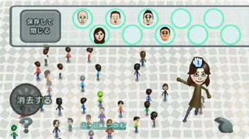
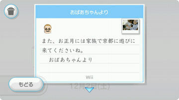

|
| 自分や家族に似たＭｉｉを作るだけでも楽しくなってくる似顔絵チャンネル。Ｍｉｉを作る面白さがわかってくると、他の人が作ったＭｉｉを見たくなってきませんか？ ここではＷｉｉの便利な機能を生かして、親しい人とのコミュニケーションにＭｉｉを役立てる方法をご紹介いたします。 |
| 友人の家でＭｉｉ対応の対戦ゲームを遊ぶときは、プレイヤーキャラとしてお気に入りのＭｉｉのデータをＷｉｉリモコンに入れて持っていくのがスマートですよ。 １つのＷｉｉリモコンで10人まで持ち運べるので、友人のＷｉｉのなかにカワイイＭｉｉを発見したらコピーしてお持ち帰りすることもできます。 |
|  |
| Ｗｉｉフレンド登録している相手のＷｉｉ伝言板にＭｉｉをくっつけてメッセージを送れます。とっておきのＭｉｉが完成してすぐに見せたいときや、メッセージの内容にあったＭｉｉ（たとえば楽しい内容には笑顔のＭｉｉなど）をくっつけて送れば、メッセージのやりとりがさらに楽しくなるはず。 |
|  |
| 似顔絵チャンネル内に用意されたＭｉｉが交流する場、それが似顔絵パレードです。 Ｗｉｉフレンドをたくさん登録した状態で、WiiConnect24をONにし、似顔絵パレードの設定画面で「交流する」にしておくと、いつのまにかインターネットを通じて、他のＷｉｉで作られたＭｉｉ達が集まってくるんです。個性的な顔ばかりのＭｉｉは眺めるだけでも楽しい気分になりますよ。 |
| 前のページへ 次のページへ | N.O.M１月号のトップページへ |